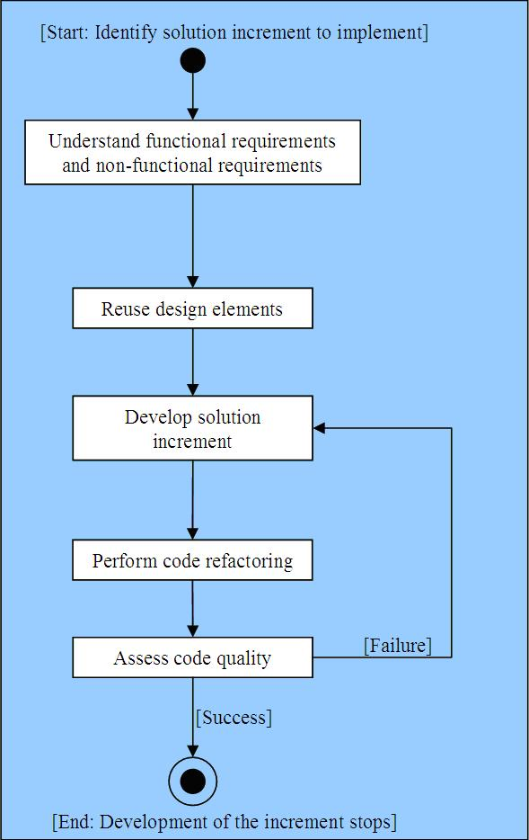

| Practice: Design Driven Implementation |
 |
|
| Content References |
|
|---|---|
| Inputs |
The Design Driven Implementation practice improves productivity by helping teams to develop a solution based on a pre-existing software design. It narrows the scope of the solution to implementation. It also facilitates the conversion between the designed solution and the actual implementation of the system as each developed module can refer to preexistent design elements. This improves productivity to achieve a better time to market. And it contributes to a better alignment between the initial business needs and the delivered system by ensuring the implementation derives from technical design and user requirements instead of ad-hoc coding. This practice also improves the quality of the final product. Each time you develop an element, you rely on a well defined design.
Adopting this practice improves predictability and project oversight by aiding project managers to scope and plan the
implementation work based on the software design elements. |
| Developers use Design Driven Implementation to create the Implementation, the developer tests, and the supporting material needed to produce quality code. Developers also apply DDI to improve the quality of the code they produce based on static analysis and best practices. |
Start by identifying a subset of the solution you need to implement: the solution increment. An increment is a small, measurable step towards solution delivery, such as a single feature to implement, or an improvement to a method. Then make sure you understand the different requirements for this small piece of the solution. Reuse the design elements as an input to the implementation and refactor the code to clean it up. This improves its internal consistency and clarity. (Note that at this step, a common practice is to also perform design refactoring to ensure maintainability and accuracy of your solution design) Assess the quality of the code produced. Then begin the cycle again on a new small piece of the solution. Finally, perform black-box testing on component or subsystem that was implemented by the collection of incremental solutions.  |
| For more information on this practice, see the practice resource page on IBM® DeveloperWorks®. |
Licensed Materials - Property of IBM |